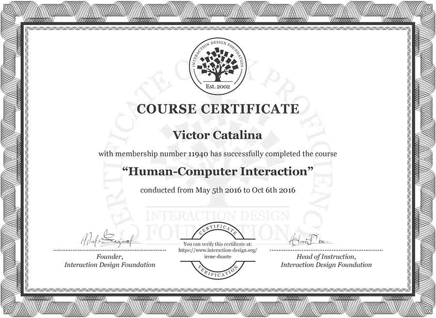
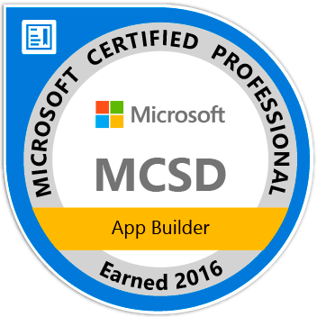

<!DOCTYPE html><html><head><title>Portfolio Víctor Catalina</title><meta chartset="utf-8"><meta name="keywords" content=""><meta name="description" content=""><meta name="viewport" content="width=device-width, initial-scale=1.0"><link href="navicon.ico" rel="shortcut icon" type="image/x-icon"><link href="styles/app.css" rel="stylesheet"></head></html><body><header id="l-header"><a id="nav-toggle"><span></span><span></span><span></span><span></span></a><nav class="menu"><ul><li data-goto="l-skills"><span class="menu-opt">SKILLS</span><span class="border"></span></li><li data-goto="l-work"> <span class="menu-opt">WORKS</span><span class="border"></span></li><li data-goto="l-contact"> <span class="menu-opt">CONTACT</span><span class="border"></span></li></ul></nav></header><main><section class="section" id="l-home"><div class="logo-catastudio"><span class="logo-title">UX DESIGNER</span><span class="icon-catastudio" title="CataStudio"></span><span class="logo-title">FULL-STACK DEVELOPER</span></div><div class="title" data-parallax-y="-.3"><p>Victor Catalina Hermoso</p><p class="profession">Software Engineer</p></div><div class="img-vch" data-parallax-y=".35"></div><!--div(class="gears" data-parallax-y=".2")--></section><section class="section" id="l-certifications"><header class="section-header"><h1>CERTIFICATIONS</h1></header><div class="section-container"><div class="certifications-container"><ul><li><a class="certification" href="https://www.youracclaim.com/badges/98f3eea2-7daa-4682-8114-230f0d1e995f" target="_blank" title="Go to the MCSA badge"><div class="logo"></div><div class="certification-details"><p class="certification-center">Microsoft<span>- ID: MS0430408195</span></p><p class="certification-name">MCSA: Web Applications</p><div class="certification-exams"><ul><li><span>Programming in HTML5 with JavaScript and CSS3</span></li><li><span>Developing ASP.NET MVC Web Applications</span></li></ul></div></div></a></li><li><a class="certification" href="https://www.youracclaim.com/badges/0cf3285b-5af4-432e-9ea2-d17b31006240" target="_blank" title="Go to the MCSD badge"><div class="logo"></div><div class="certification-details"><p class="certification-center">Microsoft<span>- ID: MS0430408195</span></p><p class="certification-name">MCSD: App Builder</p><div class="certification-exams"><ul><li><span>Developing Microsoft Azure and Web Services</span></li></ul></div></div></a></li></ul></div><div class="certifications-container"><ul><li><div class="certification"><div class="logo"></div><div class="certification-details"><p class="certification-center">Interaction Design Foundation</p><p class="certification-name">Human-Computer Interaction</p></div></div></li><li><div class="certification"><div class="logo"></div><div class="certification-details"><p class="certification-center">Interaction Design Foundation</p><p class="certification-name">Mobile User Experience Design</p></div></div></li><li><div class="certification"><div class="logo"></div><div class="certification-details"><p class="certification-center">Interaction Design Foundation</p><p class="certification-name">Web Design for Usability</p></div></div></li><li><div class="certification"><div class="logo"></div><div class="certification-details"><p class="certification-center">Interaction Design Foundation</p><p class="certification-name">Affordances: Designing Intuitive User Interfaces</p></div></div></li><li><div class="certification"><div class="logo"></div><div class="certification-details"><p class="certification-center">Interaction Design Foundation</p><p class="certification-name">The Ultimate Guide to Visual Perception and Design</p></div></div></li><li><div class="certification"><div class="logo"></div><div class="certification-details"><p class="certification-center">Interaction Design Foundation</p><p class="certification-name">Get Your Product Used: Adoption and Appropriation</p></div></div></li></ul></div></div></section><section class="section" id="l-skills"><header class="section-header"><h1>SKILLS</h1></header><div class="section-container"><div class="skill-container"><header><h2>UX Design</h2><div class="module-desc"><p>I've been interested in UX since 2013. I started to realize that to make a good software I have to focus in what the users need and how they needed. So, I started to read about it and apply that knowledge in my software. Since 2015 I work officialy as a UX designer and Front-End developer in Avanade. Please, feel free to select one skill to see more details about it.</p></div></header><ul><li><div class="skill" data-skill="usability"><div class="skill-logo sprite-skill is-usability"></div><div class="skill-level"><p>Usability Analysis</p><div class="level-bar"><div class="level-percentage" data-level="75"></div></div></div></div><div class="skill-details"><p>I've been studying usability and user-centered design since 2013. But since early 2015 I've work in different projects studying the usability of their interfaces or designing an interface from zero with the usability on mind. I also did some usability heuristic studies for some projects.</p></div></li><li><div class="skill" data-skill="wireframing"><div class="skill-logo sprite-skill is-wireframing"></div><div class="skill-level"><p>Wireframing</p><div class="level-bar"><div class="level-percentage" data-level="70"></div></div></div></div><div class="skill-details"><p>I always start a project sketching some ideas and drawing some wireframes. Now, is one of the important steps in my process where it's better iterate before start designing or developing. You can see for example some of my hi-fi wireframes in the Media Markt e-commerce project in the work section.</p></div></li><li><div class="skill" data-skill="ia"><div class="skill-logo sprite-skill is-information"></div><div class="skill-level"><p>Information Architecture</p><div class="level-bar"><div class="level-percentage" data-level="70"></div></div></div></div><div class="skill-details"><p>I participated in some projects to study their actual website and studing their information architecture and how we can improve the global navigation. I also did some online courses about card sorting and how to get to the right information architecture.</p></div></li><li><div class="skill" data-skill="benchmarking"><div class="skill-logo sprite-skill is-benchmarking"></div><div class="skill-level"><p>Benchmarking</p><div class="level-bar"><div class="level-percentage" data-level="75"></div></div></div></div><div class="skill-details"><p>The early steps that I have to do when thinking in a new project is study their competitors and get some ideas from them.</p></div></li><li><div class="skill" data-skill="responsive"><div class="skill-logo sprite-skill is-responsive"></div><div class="skill-level"><p>Responsive Design</p><div class="level-bar"><div class="level-percentage" data-level="90"></div></div></div></div><div class="skill-details"><p>I always have in mind a responsive or adaptive design when developing my application. So, it's just another important part that we can't avoid when developing a website. I usually start with a mobile first approach.</p></div></li><li><div class="skill" data-skill="design"><div class="skill-logo sprite-skill is-design"></div><div class="skill-level"><p>Interface Design</p><div class="level-bar"><div class="level-percentage" data-level="50"></div></div></div></div><div class="skill-details"><p>I always like graphic design but altough I'm not a designer I like to design my own staff and try to do my best. I study a lot of design, and I try to design the interfaces and improve with each of them. So, I'm still growing in this field.</p></div></li><li><div class="skill" data-skill="interaction"><div class="skill-logo sprite-skill is-interaction"></div><div class="skill-level"><p>Interaction Design</p><div class="level-bar"><div class="level-percentage" data-level="80"></div></div></div></div><div class="skill-details"><p>I love interaction design and it's the part of user experience where I'm more focused. I developed many applications from the start to the end just by my own and in direct contact with users. It's for it that I like to know of interact with software and pros and cons in any decision and whats the cost in user experience, designing and developing in the front or in the back.</p></div></li><li><div class="skill" data-skill="photoshop"><div class="skill-logo sprite-skill is-photoshop"></div><div class="skill-level"><p>Adobe Photoshop</p><div class="level-bar"><div class="level-percentage" data-level="65"></div></div></div></div><div class="skill-details"><p>I've been working with Photoshop since 2013 and I use it overall to retouch images and prepare it for the website. Sometimes I used it to design some interfaces but I feel more comfortable with Illustrator because Photoshop is a really heavy tool.</p></div></li><li><div class="skill" data-skill="illustrator"><div class="skill-logo sprite-skill is-illustrator"></div><div class="skill-level"><p>Adobe Illustrator</p><div class="level-bar"><div class="level-percentage" data-level="80"></div></div></div></div><div class="skill-details"><p>I like Adobe Illustrator and I've using it for a time, since 2014 probably. It's the tool that I always use for my wireframes, icon design, and sometimes for the graphic design of the interfaces.</p></div></li><li><div class="skill" data-skill="aftereffects"><div class="skill-logo sprite-skill is-after-effects"></div><div class="skill-level"><p>Adobe After Effects</p><div class="level-bar"><div class="level-percentage" data-level="30"></div></div></div></div><div class="skill-details"><p>I like motion graphics and for all the 2015 I did a lot of online courses to learn this tool. I think that I learn to use it very well but I never had time to practise so probabily I forgot some of what I learned but I'm still like it, the problem is that there is sooo much to study in ux, front-end and back-end.</p></div></li><li><div class="skill" data-skill="cinema4d"><div class="skill-logo sprite-skill is-cinema4d"></div><div class="skill-level"><p>Maxon Cinema 4D</p><div class="level-bar"><div class="level-percentage" data-level="15"></div></div></div></div><div class="skill-details"><p>I start to study Cinema4D as a compatible tool with After Effects and I like the way it treat the physics, however as it happens with After Effects, I didn't have time to do some projects with Cinema 4D and probably forget some of them.</p></div></li></ul></div><div class="skill-container"><header><h2>Front-End Development</h2><div class="module-desc"><p>With the evolution of the web and the powerful of the browser some of the logic can be execute in the client freeing the server to do the important things. With that in mind, I started to invest more time growing my knowledge in Front-End development since 2012. I like developing a website avoiding the overuse of frameworks, focusing myself in clean code, good performance and with the future maintenance in mind. Please, feel free to select one skill to see more details about it.</p></div></header><ul><li><div class="skill" data-skill="html5"><div class="skill-logo sprite-skill is-html5"></div><div class="skill-level"><p>HTML 5</p><div class="level-bar"><div class="level-percentage" data-level="95"></div></div></div></div><div class="skill-details"><p>I've been working with HTML since 2012 and when I'm developing a website I'm very focus in use the correct tag for every element and do a semantic website. I read a lot about web standards and how to do an efficient website from the begining. I like to separate this content layer from the presentation layer and avoid the overuse of tags and classes.</p></div></li><li><div class="skill" data-skill="css3"><div class="skill-logo sprite-skill is-css3"></div><div class="skill-level"><p>CSS 3</p><div class="level-bar"><div class="level-percentage" data-level="95"></div></div></div></div><div class="skill-details"><p>I love CSS3 and I think that you can do wherever you want with just CSS3. I give a webcast explaining all the fundamentals of CSS3 and you can see about it in the 'Webcast CSS3' project in the work section.</p></div></li><li><div class="skill" data-skill="javascript"><div class="skill-logo sprite-skill is-javascript"></div><div class="skill-level"><p>JavaScript</p><div class="level-bar"><div class="level-percentage" data-level="90"></div></div></div></div><div class="skill-details"><p>I really like programming in JavaScript and I'm always studying to improve my knowledge in this language. I did some presential courses for advanced level of javascript programmers and since 2015 I'm working mainly as a JavaScript programmer doing websites in my company. I like programming in vanilla JavaScript and avoid the use of the framework of the moment, probabily in the future that framework will not be famous anymore and the website will be obsolete. This way I believe in a clean code in JavaScript and a knowledge in architecture patterns are the right key to a good development instead of appeal a framework.</p></div></li><li><div class="skill" data-skill="jquery"><div class="skill-logo sprite-skill is-jquery"></div><div class="skill-level"><p>jQuery</p><div class="level-bar"><div class="level-percentage" data-level="90"></div></div></div></div><div class="skill-details"><p>I used a lot jquery some years ago and It's a great library for browser compatibility, however those days these browser differences has reduced and probabily we don't really need the use of it. For that, I try not to use it in my projects and do it in plain JavaScript. I believe that our website will have a better perfomance if we don't saturate it with external libraries.</p></div></li><li><div class="skill" data-skill="xaml"><div class="skill-logo sprite-skill is-xaml"></div><div class="skill-level"><p>XAML</p><div class="level-bar"><div class="level-percentage" data-level="60"></div></div></div></div><div class="skill-details"><p>XAML is an XML language of Microsoft to develop the interfaces of their software, like Xamarin Apps, WPF or Windows Universal Apps. I developed in this language to do some desktop aplications or Xamarin Apps. Homwever, I love to do more websites than local apps, so if I have to choose lets go to HTML.</p></div></li><li><div class="skill" data-skill="nodejs"><div class="skill-logo sprite-skill is-nodejs"></div><div class="skill-level"><p>NodeJS</p><div class="level-bar"><div class="level-percentage" data-level="40"></div></div></div></div><div class="skill-details"><p>I usually choose .NET an Microsoft technology as my back-end environment, however NodeJS it's a good choice to quickly stand up a server. For this I went to a presential course for a month to learn NodeJS in 2015. But I never used it in production stage.</p></div></li><li><div class="skill" data-skill="expressionblend"><div class="skill-logo sprite-skill is-visualstudio"></div><div class="skill-level"><p>Expression Blend</p><div class="level-bar"><div class="level-percentage" data-level="30"></div></div></div></div><div class="skill-details"><p>Expression Blend is the IDE of Microsoft to design visually in XAML, I used a couple of times and know a little bit how to use it. However I still prefer write my code directly and not using drag and drop elements.</p></div></li><li><div class="skill" data-skill="bootstrap"><div class="skill-logo sprite-skill is-bootstrap"></div><div class="skill-level"><p>Bootstrap</p><div class="level-bar"><div class="level-percentage" data-level="60"></div></div></div></div><div class="skill-details"><p>I used Bootstrap in a couple of projects and I know the advantages of using it, however I have to said that I don't like it. Write HTML and CSS is very easy and quick, so I think that this framework is nice for people without knowledge in those languages but I prefer avoid overwhelm the website with a lot of CSS lines that probably I will have to overwrite to my design.</p></div></li><li><div class="skill" data-skill="phonegap"><div class="skill-logo sprite-skill is-phonegap"></div><div class="skill-level"><p>PhoneGap</p><div class="level-bar"><div class="level-percentage" data-level="60"></div></div></div></div><div class="skill-details"><p>I did a project with PhoneGap and Apache Cordova in 2015 and a I learned a lot about it. I think it's very easy to use with a Front-End background and probably a good choice to develop an hibrid application than not need all the potential of the phone with the neccesity of doing it native.</p></div></li><li><div class="skill" data-skill="angularjs"><div class="skill-logo sprite-skill is-angular"></div><div class="skill-level"><p>AngularJS</p><div class="level-bar"><div class="level-percentage" data-level="60"></div></div></div></div><div class="skill-details"><p>I learned AngularJS because of its popularity and I used it in a couple of projects. As a MVC pattern framework It's very similar to programming in ASP.NET MVC so the concepts and the architecture it's very similar. However, in my opinion not every website need a MVC pattern in the client so I only used it in countless occasions.</p></div></li><li><div class="skill" data-skill="sass"><div class="skill-logo sprite-skill is-sass"></div><div class="skill-level"><p>SASS</p><div class="level-bar"><div class="level-percentage" data-level="90"></div></div></div></div><div class="skill-details"><p>SASS is great to write fast CSS, and finally, as a preprocessor, it's a tool that not overwhelm my project with extra lines of code instead it's helping to write it with the functionality that CSS lacks. But, With SASS I have to be very cautious of the hierarchy and the priority rules of CSS, because if not, you can ended with a very verbose CSS.</p></div></li><li><div class="skill" data-skill="less"><div class="skill-logo sprite-skill is-less"></div><div class="skill-level"><p>LESS</p><div class="level-bar"><div class="level-percentage" data-level="60"></div></div></div></div><div class="skill-details"><p>LESS is very similar than SASS and I used it in a couple of projects that I didn't started, so LESS was the first election of the developer. I founded the two of them very similar but I'm still choosing SASS as the primary CSS preprocessor.</p></div></li><li><div class="skill" data-skill="threejs"><div class="skill-logo sprite-skill is-three"></div><div class="skill-level"><p>ThreeJS</p><div class="level-bar"><div class="level-percentage" data-level="40"></div></div></div></div><div class="skill-details"><p>I like three.js for its simplicity and the library to work in 3D for the website instead of the native WebGL. I used when I was studying the Master and now I'm taking that knowledge back to programming for WebVR and the virtual reality headsets.</p></div></li><li><div class="skill" data-skill="webgl"><div class="skill-logo sprite-skill is-webgl"></div><div class="skill-level"><p>WebGL</p><div class="level-bar"><div class="level-percentage" data-level="40"></div></div></div></div><div class="skill-details"><p>Thanks WebGl we can programming 3D for the web. I did some proof of concepts with WebGl directly but It's easier with the layer of three.js on top of it.</p></div></li><li><div class="skill" data-skill="d3"><div class="skill-logo sprite-skill is-d3"></div><div class="skill-level"><p>D3.js</p><div class="level-bar"><div class="level-percentage" data-level="75"></div></div></div></div><div class="skill-details"><p>I think that Data Visualization is very important and I study and read a lot about a good user experience in data visualization. I choose D3.js as my default data visualization library and I always using it when I have to represent a chart, you can see some of the proves of concept that I did in the work section.</p></div></li></ul></div><div class="skill-container"><header><h2>Back-End Development</h2><div class="module-desc"><p>Since 2008 I've been working as a back-end developer specialized in .NET and Microsoft technologies. I've been working from Analyst to Consultant and in all this period I've been developing in so many technologies, like Desktop applications with Windows Forms and Windows Presentation Foundation, Websites with ASP.NET MVC, Windows Services or REST and SOAP services. Please, feel free to select one skill to see more details about it.</p></div></header><ul><li><div class="skill" data-skill="net"><div class="skill-logo sprite-skill is-microsoft"></div><div class="skill-level"><p>.NET</p><div class="level-bar"><div class="level-percentage" data-level="85"></div></div></div></div><div class="skill-details"><p>I've been working with .NET since 2008 when I started in Avanade. I think that .NET is one of the most important back-end frameworks which let you write every kind of software. In all this time I developed desktop applications, websites, Windows Services, REST and SOAP services or native apps with this framework.</p></div></li><li><div class="skill" data-skill="aspnetmvc"><div class="skill-logo sprite-skill is-microsoft"></div><div class="skill-level"><p>ASP.NET MVC</p><div class="level-bar"><div class="level-percentage" data-level="90"></div></div></div></div><div class="skill-details"><p>ASP.NET MVC let you write back-end code for website using the Model-View-Controller pattern and I've been using it since 2012. I always create an MVC project as my back-end in every website application that I develop, but altought this framework also offers you the possibility to develop de UI directly in the server, I always prefer do that part by my own with HTML/CSS/JavaScript. I did the certification exam 486 which it's all about ASP.NET MVC.</p></div></li><li><div class="skill" data-skill="aspnetwebapi"><div class="skill-logo sprite-skill is-microsoft"></div><div class="skill-level"><p>ASP.NET Web API</p><div class="level-bar"><div class="level-percentage" data-level="90"></div></div></div></div><div class="skill-details"><p>I did a lot of Web API and it's just another part of the development process. I also did a certification exam about it to get the Microsoft Solution Developer Certification.</p></div></li><li><div class="skill" data-skill="adonet"><div class="skill-logo sprite-skill is-microsoft"></div><div class="skill-level"><p>ADO.NET</p><div class="level-bar"><div class="level-percentage" data-level="90"></div></div></div></div><div class="skill-details"><p>With ADO.NET we can manage the data access to our database. It's another important part of the development process with .NET framework and I learn more about it for the certification exam to get the MCSD certification.</p></div></li><li><div class="skill" data-skill="csharp"><div class="skill-logo sprite-skill is-csharp"></div><div class="skill-level"><p>C#</p><div class="level-bar"><div class="level-percentage" data-level="90"></div></div></div></div><div class="skill-details"><p>C# is my favorite back-end language and I've been developing with it since 2008.</p></div></li><li><div class="skill" data-skill="visualbasic"><div class="skill-logo sprite-skill is-vb"></div><div class="skill-level"><p>Visual Basic</p><div class="level-bar"><div class="level-percentage" data-level="60"></div></div></div></div><div class="skill-details"><p>I had to code with Visual Basic in the maintenance of different projects, so I learn about it. However, I always prefer to write with C# and it's been awhile that I don't use it in any project.</p></div></li><li><div class="skill" data-skill="xamarin"><div class="skill-logo sprite-skill is-xamarin"></div><div class="skill-level"><p>Xamarin Forms</p><div class="level-bar"><div class="level-percentage" data-level="45"></div></div></div></div><div class="skill-details"><p>Xamarin Froms is the brand-new Microsoft framework to write native apps. I worked in a project writing the front-end of the app with XAML, the back-end it's almost the same than the rest applications with .NET. I think it's a good framework to write native apps without need to learn Java or Switch.</p></div></li><li><div class="skill" data-skill="visualstudio"><div class="skill-logo sprite-skill is-visualstudio"></div><div class="skill-level"><p>Microsoft Visual Studio</p><div class="level-bar"><div class="level-percentage" data-level="95"></div></div></div></div><div class="skill-details"><p>Visual Studio is my favorite IDE for developing and I'm using it every day since 2008.</p></div></li><li><div class="skill" data-skill="tfs"><div class="skill-logo sprite-skill is-visualstudio"></div><div class="skill-level"><p>Microsoft Team Foundation Server</p><div class="level-bar"><div class="level-percentage" data-level="80"></div></div></div></div><div class="skill-details"><p>I've been using TFS since 2008 as a version control and task managment.</p></div></li><li><div class="skill" data-skill="wcf"><div class="skill-logo sprite-skill is-microsoft"></div><div class="skill-level"><p>Windows Communication Foundation (WCF)</p><div class="level-bar"><div class="level-percentage" data-level="75"></div></div></div></div><div class="skill-details"><p>With WCF I can develop SOAP services and I did it in some projects, I also did a certification exam which ask about it. Know it's more common that I develop REST than SOAP services.</p></div></li><li><div class="skill" data-skill="wpf"><div class="skill-logo sprite-skill is-microsoft"></div><div class="skill-level"><p>Windows Presentation Foundation (WPF)</p><div class="level-bar"><div class="level-percentage" data-level="65"></div></div></div></div><div class="skill-details"><p>I developed some desktop applications with WPF between 2013 and 2015. It was the evolution of the Windows Forms in Microsoft and a good jump to develop desktop software, but now I'm more website person.</p></div></li><li><div class="skill" data-skill="entityframework"><div class="skill-logo sprite-skill is-microsoft"></div><div class="skill-level"><p>Entity Framework</p><div class="level-bar"><div class="level-percentage" data-level="75"></div></div></div></div><div class="skill-details"><p>I use Entity Framework as my data model in every back-end project, I've been working with Entity Framework since 2010 and I learn more about it for the MCSD exam.</p></div></li><li><div class="skill" data-skill="linq"><div class="skill-logo sprite-skill is-microsoft"></div><div class="skill-level"><p>LINQ</p><div class="level-bar"><div class="level-percentage" data-level="80"></div></div></div></div><div class="skill-details"><p>LINQ is great to query data and I improve my knowledge for this technology to increase the performance of my software.</p></div></li><li><div class="skill" data-skill="sql"><div class="skill-logo sprite-skill is-sql"></div><div class="skill-level"><p>SQL</p><div class="level-bar"><div class="level-percentage" data-level="60"></div></div></div></div><div class="skill-details"><p>I know about SQL language and I write queries in my projects since 2008, but I replaced most of my SQL querying for the ADO.NET techonology like Entity Framework or LINQ.</p></div></li><li><div class="skill" data-skill="sqlserver"><div class="skill-logo sprite-skill is-sqlserver"></div><div class="skill-level"><p>Microsoft SQL Server</p><div class="level-bar"><div class="level-percentage" data-level="60"></div></div></div></div><div class="skill-details"><p>Between 2010 and 2015 I worked in the most important broadcasting company in Spain doing internal software, in this time my task not only was developing software but also to be in charge of the database so in this period I learn about Microsoft SQL Server and how to manage a database in a low level.</p></div></li><li><div class="skill" data-skill="iis"><div class="skill-logo sprite-skill is-microsoft"></div><div class="skill-level"><p>Internet Information Services (IIS)</p><div class="level-bar"><div class="level-percentage" data-level="55"></div></div></div></div><div class="skill-details"><p>With IIS I can publish my website and stand up my web server, I know IIS because between 2010 and 2015 I was in charge of a lot of server publish in the local servers of the company client.</p></div></li><li><div class="skill" data-skill="azure"><div class="skill-logo sprite-skill is-azure"></div><div class="skill-level"><p>Windows Azure</p><div class="level-bar"><div class="level-percentage" data-level="20"></div></div></div></div><div class="skill-details"><p>Azure is the cloud of Microsoft and I founded it very useful to publish my website in the cloud. I also learn a lit bit about it for my MCSD exam 'Developing Microsoft Azure and Web Services'</p></div></li></ul></div></div></section><section class="section" id="l-work"><header class="section-header"><h1>SOME OF MY WORK</h1></header><div class="section-container"><p class="section-desc">Most of my work has been for my company in Avanade but also for my University. So, It's for that most of my work are restricted by confidentiality agrements but here you can see some of my projects where you can see my development on the differents areas.</p><div class="work-container"><ul><li><a class="work" href="/work/mediam.html" target="_self"><div class="work-thumb bg-mm"></div><p class="work-title">Media Markt</p></a></li><li><a class="work" href="" target="_self"><div class="work-thumb bg-caixa"></div><p class="work-title">Caixa Geral</p></a></li><li><a class="work" href="" target="_self"><div class="work-thumb bg-mp"></div><p class="work-title">Media Planning</p></a></li><li><a class="work" href="" target="_self"><div class="work-thumb bg-pfm"></div><p class="work-title">Data Visualization in Biology</p></a></li><li><a class="work" href="" target="_self"><div class="work-thumb bg-mediaplayer"></div><p class="work-title">Media Player</p></a></li><li><a class="work" href="" target="_self"><div class="work-thumb bg-pfc"></div><p class="work-title">e-Learning in Real Time Communication</p></a></li><li><a class="work" href="" target="_self"><div class="work-thumb bg-webcastcss"></div><p class="work-title">CSS3 webcast class</p></a></li><li><a class="work" href="" target="_self"><div class="work-thumb bg-dataviz"></div><p class="work-title">Data Visualization with D3.js</p></a></li><li><a class="work" href="" target="_self"><div class="work-thumb bg-addon"></div><p class="work-title">Addon Design for Microsoft Office</p></a></li><li><a class="work" href="" target="_self"><div class="work-thumb bg-mediaset"></div><p class="work-title">+20 applications for Mediaset</p></a></li></ul></div></div></section><section class="section" id="l-contact"><div class="contact"><header><p>UX Designer</p><h2>VICTOR CATALINA HERMOSO</h2><p>Software Developer</p></header><div class="contact-content"><div class="contact-summary"><div class="contact-speech"><p>Feel free to contact with me for any reason. I'll be very happy to know about you.</p><p>Just to talk of this world, to share ideas of just to offer me a job, whatever the reason I'll be glad to ear of you and I answer you any question.</p></div></div><div class="contact-form"><div class="form-row"><label for="name">NAME</label><input id="name" name="name" type="text" placeholder="Name"></div><div class="form-row"><label for="email">EMAIL</label><input id="email" name="email" type="email" placeholder="Your email"></div><div class="form-row"><label>COMMENTS</label><textarea id="comments" name="comments" rows="10" placeholder="..."></textarea></div><div class="form-row form-submit"><button class="btn" id="send-email">SEND COMMENTS</button></div></div></div></div></section></main><footer id="l-footer"><span class="footer-logo"></span><address><p>CataStudio.com</p><p><small>Víctor Catalina Hermoso</small></p></address><ul class="social-media is-floating" id="rrss"><li><a class="icon-linkedin" href="https://es.linkedin.com/in/victorcata/en" target="_blank" title="Linkedin"></a></li><li><a class="icon-github" href="https://github.com/victorcata" target="_blank" title="Github"></a></li></ul></footer><button class="btn-top is-hidden" id="nav-top"></button><script src="js/app.js"></script></body>